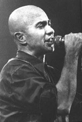

Nacimiento de un Mito |
||||
|  |
Comienzos de los setenta, el movimiento hippie empieza a hacerse notar en la argentina. Los gritos de libertad se escuchan cada vez más. Cientos de adolescentes salen a las calles y buscan la forma de expresarse ante la censura y la dura represión de esos años. En La Plata, provincia de Bs. As., una ciudad con grandes concentraciones obreras y un alto porcentaje de población universitaria, comienza a escribirse la historia. En un principio eran solo reuniones de amigos, descendientes de La Cofradía de la Flor Solar, aquella comunidad hippie que había surgido hacia fines de la década del sesenta como una alternativa de vida diferente. Sus miembros compartían una experiencia existencial muy vinculada al arte y en especial a la música. Allí estaban el Indio Solari, La negra Poly, Skay Beilinson y Rocambole entre otros. Llegado el momento, deciden abandonar esta forma de vida e instalarse en su propia chacra en Tolosa; comienzan a gestar una movida en torno a ellos. |
|||
Mas adelante, regresarían a La Plata donde se rodean de nuevos y viejos amigos, integrantes de grupos de teatro alternativo, periodistas, músicos de rock, etc. Se ponía en marcha una singular historia. Nacía casi una leyenda.Fue alrededor del 77 cuando cobró auténtica vida Patricio Rey y sus Redonditos de Ricota. En un principio no tenía nombre ni integrantes fijos, sino alrededor de 15 músicos que se alternaban en los instrumentos. Las apariciones surgían de improvisto.
|
||||
Página 01 |
||||